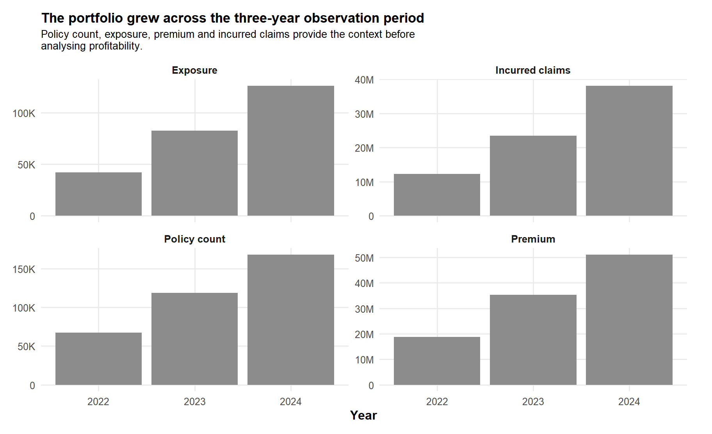
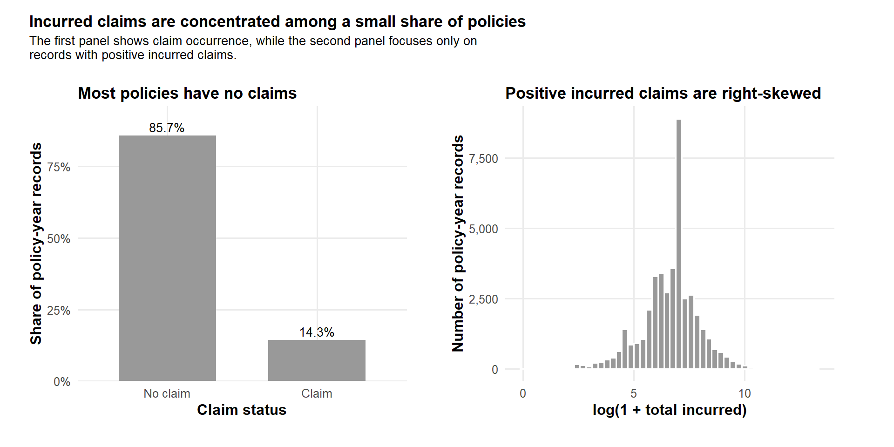
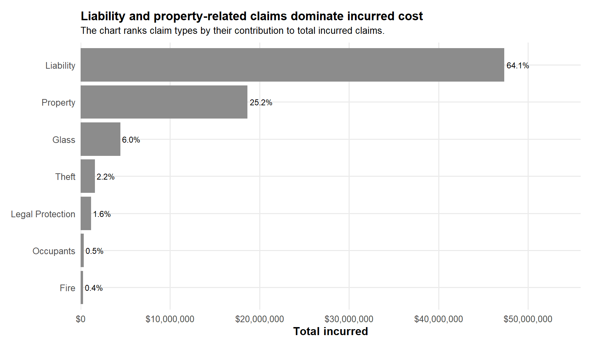
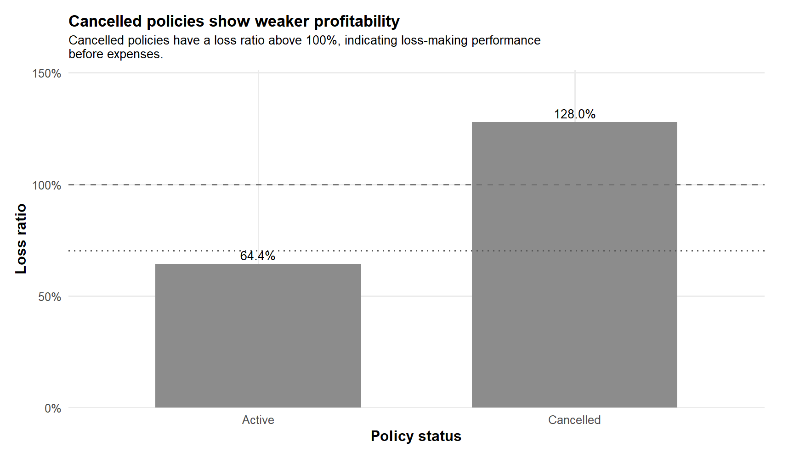
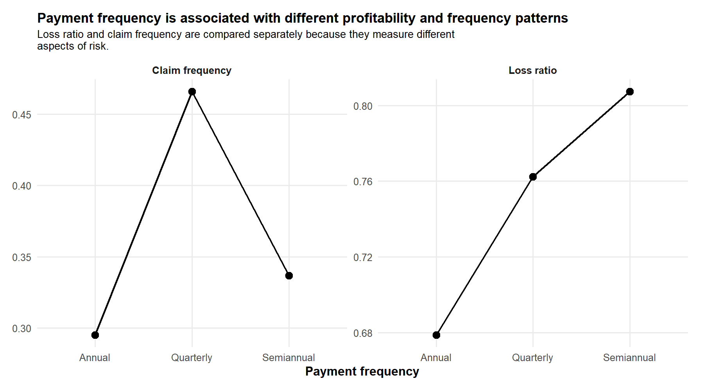
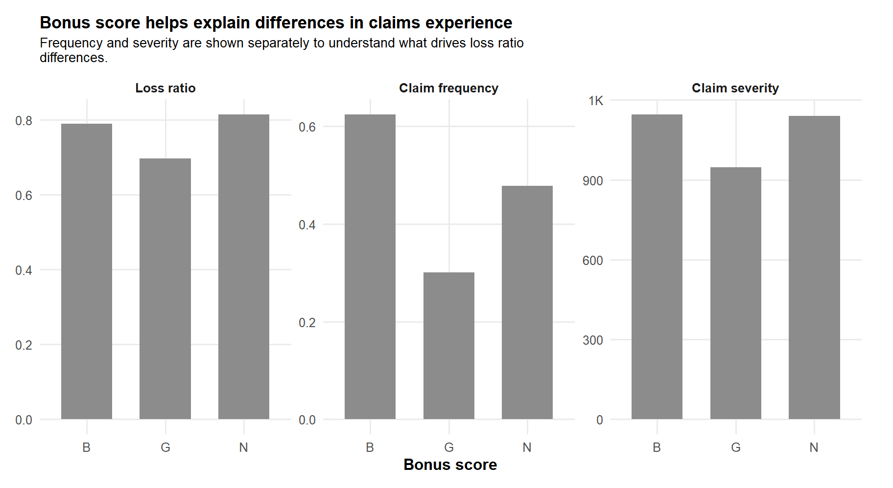
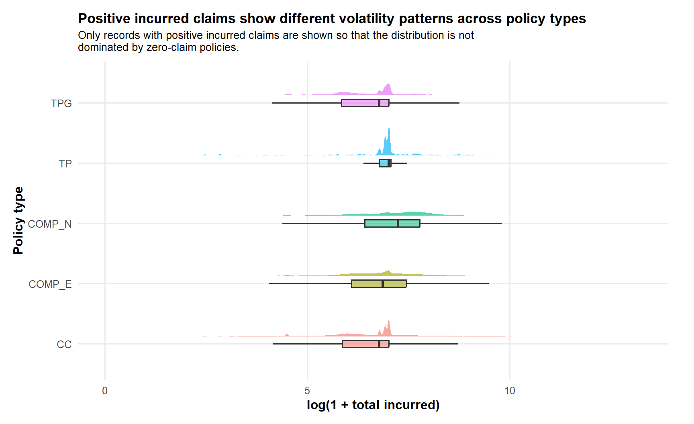
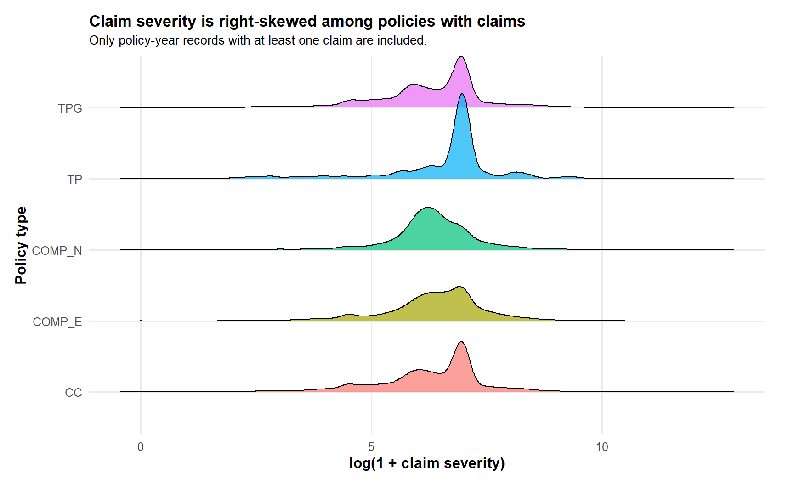
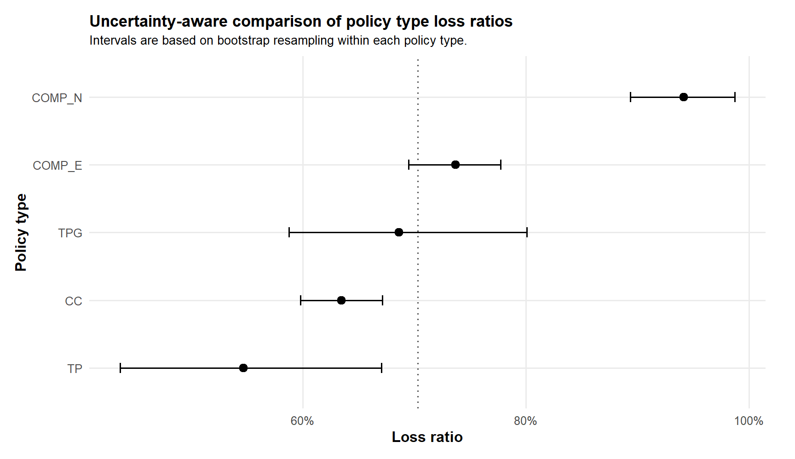

pacman::p_load(
tidyverse, readxl, janitor, scales, patchwork,
ggiraph, plotly, ggridges, ggdist,
ggstatsplot, knitr, glue
)Take-Home Exercise 1: Visual Analytics of Profitability and Claims Volatility in a Motor Insurance Portfolio
Overview
Setting the scene
Motor insurance portfolios are affected by uneven risk across policy, driver, vehicle, and claims-related characteristics. A portfolio may appear profitable at the aggregate level, but weaker performance can still be concentrated within selected policy types, cancelled policies, vehicle groups, or claim types. Hence, a portfolio-level average is useful as a starting point, but it is not sufficient for underwriting or pricing-related decision-making.
In this exercise, visual analytics is used to investigate a real-world motor vehicle insurance portfolio from a Spanish non-life insurance company. The focus is on discovering the underlying patterns that explain profitability and claims volatility across the portfolio.
Our task
The objective of this report is to use appropriate visual analytics techniques in R to explore the motor insurance portfolio and answer the following analytical questions:
- How has the portfolio’s premium, incurred claims, and loss ratio changed from 2022 to 2024?
- Which policy, driver, and vehicle segments are associated with weaker profitability?
- Which segments show higher claims volatility in terms of claim frequency and claim severity?
- Are the observed differences across segments visually and statistically meaningful?
The overall research question is:
Which policy, driver, vehicle, and claims-related segments are driving poor profitability and claims volatility in the motor insurance portfolio?
Loading packages
The table below summarises the R packages used in this exercise.
| Package | Purpose |
|---|---|
tidyverse |
Core data wrangling and visualisation using dplyr, tidyr, readr, and ggplot2. |
readxl |
Importing the Excel file that describes the variables. |
janitor |
Cleaning variable names into a consistent format. |
scales |
Formatting percentages, comma-separated numbers, and axis labels. |
patchwork |
Combining multiple ggplot charts into one composite visual. |
ggiraph |
Creating interactive ggplot visuals with tooltips. |
plotly |
Creating interactive charts such as treemaps and funnel plots. |
ggridges |
Creating ridgeline plots for distribution comparison. |
ggdist |
Creating raincloud-style and uncertainty visualisations. |
ggstatsplot |
Creating visual statistical analysis charts. |
knitr |
Producing clean report tables in markdown format. |
glue |
Creating clearer tooltip labels. |
The code chunk below checks whether the packages are installed. If they are installed, they will be loaded into the R environment. If they are not installed, they will be installed first before being loaded.
The next code chunk defines a custom visual theme. This is done to make the charts in this report visually consistent.
theme_motor <- function(base_size = 12) {
theme_minimal(base_size = base_size) +
theme(
plot.title = element_text(face = "bold", size = 13, margin = margin(b = 4)),
plot.subtitle = element_text(size = 10, lineheight = 0.95, margin = margin(b = 8)),
plot.caption = element_text(size = 8, colour = "grey40"),
axis.title = element_text(face = "bold"),
legend.position = "bottom",
panel.grid.minor = element_blank(),
strip.text = element_text(face = "bold"),
plot.margin = margin(t = 12, r = 24, b = 12, l = 12)
)
}
theme_set(theme_motor())
wrap_title <- function(x, width = 85) {
stringr::str_wrap(x, width = width)
}
girafe_safe <- function(plot_object, width = 9, height = 5.4) {
ggiraph::girafe(
ggobj = plot_object,
width_svg = width,
height_svg = height
) |>
ggiraph::girafe_options(
ggiraph::opts_sizing(rescale = TRUE),
ggiraph::opts_tooltip(
css = "
background-color: rgba(255, 255, 255, 0.88);
color: black;
border: 1px solid rgba(80, 80, 80, 0.35);
border-radius: 4px;
padding: 6px;
font-size: 12px;
"
)
)
}Data preparation
Importing the dataset
The dataset used in this exercise is a motor insurance portfolio dataset. The main data file is now stored as a comma-separated CSV file. An additional Excel file is used as a variable dictionary to understand the meaning of each variable.
The code chunk below imports both files from the data folder and cleans the variable names so that they can be used consistently in the analysis.
motor_path <- read_csv("../data/motor-insurance-data-final.csv") |>
clean_names()
dictionary_path <- read_excel("../data/variable-description.xlsx") |>
clean_names()Initial inspection of the dataset
The code chunk below provides an initial overview of the dataset. This is useful because the unit of analysis needs to be clearly understood before calculating profitability and volatility metrics.
| Item | Value |
|---|---|
| Number of policy-year records | 354,140 |
| Number of variables | 47 |
| Number of unique insured IDs | 185,678 |
| First year in dataset | 2022 |
| Last year in dataset | 2024 |
data_overview <- data.frame(
Item = c(
"Number of policy-year records",
"Number of variables",
"Number of unique insured IDs",
"First year in dataset",
"Last year in dataset"
),
Value = c(
comma(nrow(motor_path)),
comma(ncol(motor_path)),
comma(n_distinct(motor_path$insured_id)),
as.character(min(motor_path$year, na.rm = TRUE)),
as.character(max(motor_path$year, na.rm = TRUE))
)
)
knitr::kable(data_overview, format = "pipe", align = "ll")Based on the structure of the data, each row represents a policy-year record. This means that the same insured person may appear more than once if the policy appears across multiple years.
Variables used in this analysis
The original dataset contains policy information, driver and vehicle characteristics, premium components, claim counts, incurred claim amounts, and exposure values. For this exercise, the variables are grouped according to their analytical purpose.
| Variable group | Variables used | Purpose |
|---|---|---|
| Policy profile | year, policy_type, policy_status, business_type, payment_frequency, bonus_score | To compare profitability and volatility across product and policy behaviour segments. |
| Driver and vehicle profile | driver_age, vehicle_age, fuel_type, vehicle_value, vehicle_brand, municipality_type, circulation_area | To understand whether risk differs across customer and vehicle characteristics. |
| Premium | total_premium and premium components | To measure revenue and pricing adequacy across segments. |
| Claims and incurred | total_claims, claim components, total_incurred and incurred components | To measure claim occurrence, claim composition, and claim cost. |
| Exposure | total_exposure and liability_exposure | To adjust claim frequency and profitability comparisons for portfolio size. |
analysis_variable_groups <- data.frame(
`Variable group` = c(
"Policy profile",
"Driver and vehicle profile",
"Premium",
"Claims and incurred",
"Exposure"
),
`Variables used` = c(
"year, policy_type, policy_status, business_type, payment_frequency, bonus_score",
"driver_age, vehicle_age, fuel_type, vehicle_value, vehicle_brand, municipality_type, circulation_area",
"total_premium and premium components",
"total_claims, claim components, total_incurred and incurred components",
"total_exposure and liability_exposure"
),
Purpose = c(
"To compare profitability and volatility across product and policy behaviour segments.",
"To understand whether risk differs across customer and vehicle characteristics.",
"To measure revenue and pricing adequacy across segments.",
"To measure claim occurrence, claim composition, and claim cost.",
"To adjust claim frequency and profitability comparisons for portfolio size."
),
check.names = FALSE
)
knitr::kable(analysis_variable_groups, format = "pipe", align = "lll")Data cleaning
The code chunk below checks duplicated rows, missing values, and data types.
| Check | Count |
|---|---|
| Duplicated rows | 0 |
duplicate_summary <- data.frame(
Check = "Duplicated rows",
Count = comma(sum(duplicated(motor_path)))
)
knitr::kable(duplicate_summary, format = "pipe", align = "ll")The next code chunk checks the number and percentage of missing values for each variable. Only variables with missing values are displayed.
| Variable | Missing count | Missing share |
|---|---|---|
| fuel_type | 1,287 | 0.36% |
| vehicle_value | 513 | 0.14% |
| vehicle_age | 2 | 0.00% |
| age_driving_licence | 2 | 0.00% |
missing_summary <- motor_path |>
summarise(across(everything(), ~sum(is.na(.x)))) |>
pivot_longer(
cols = everything(),
names_to = "Variable",
values_to = "Missing count"
) |>
mutate(`Missing share` = `Missing count` / nrow(motor_path)) |>
filter(`Missing count` > 0) |>
arrange(desc(`Missing count`)) |>
mutate(
`Missing count` = comma(`Missing count`),
`Missing share` = percent(`Missing share`, accuracy = 0.01)
) |>
as.data.frame()
if (nrow(missing_summary) == 0) {
missing_summary <- data.frame(
Variable = "No missing values detected",
`Missing count` = "0",
`Missing share` = "0.00%",
check.names = FALSE
)
}
knitr::kable(missing_summary, format = "pipe", align = "lll")The code chunk below converts important numeric fields into numeric type explicitly. Although the comma-separated file should already import most numeric variables correctly, this step is kept to make the analysis reproducible and to avoid downstream calculation errors.
| Variable | Imported type |
|---|---|
| total_premium | numeric |
| total_incurred | numeric |
| total_claims | numeric |
| total_exposure | numeric |
premium_components <- c(
"liability_premium", "property_damage_premium", "theft_premium",
"fire_premium", "glass_premium", "legal_protection_premium",
"occupants_premium"
)
claim_components <- c(
"liability_claims", "property_claims", "theft_claims",
"fire_claims", "glass_claims", "legal_protection_claims",
"occupants_claims"
)
incurred_components <- c(
"liability_incurred", "property_incurred", "theft_incurred",
"fire_incurred", "glass_incurred", "legal_protection_incurred",
"occupants_incurred"
)
numeric_cols <- c(
"insured_id", "year",
"driver_age", "vehicle_age", "age_driving_licence",
"vehicle_value", "seats", "power_to_weight_ratio",
"total_premium", premium_components,
"total_claims", "liability_property_claims", "liability_injury_claims", claim_components,
"total_incurred", "liability_property_incurred", "liability_injury_incurred", incurred_components,
"total_exposure", "liability_exposure"
)
motor_path <- motor_path |>
mutate(
across(
any_of(numeric_cols),
~ suppressWarnings(as.numeric(.x))
)
)
column_type_summary <- motor_path |>
select(any_of(c("total_premium", "total_incurred", "total_claims", "total_exposure"))) |>
summarise(across(everything(), ~class(.x)[1])) |>
pivot_longer(
cols = everything(),
names_to = "Variable",
values_to = "Imported type"
) |>
as.data.frame()
knitr::kable(column_type_summary, format = "pipe", align = "ll")Component validation
Before deriving profitability metrics, the consistency of total premium, total claims, and total incurred values is checked against their corresponding components. This reduces the risk of building visualisations on inconsistent fields.
| Maximum absolute premium difference | Maximum absolute claim count difference | Maximum absolute incurred difference |
|---|---|---|
| 0.0000 | 0.0000 | 0.0000 |
component_check <- motor_path |>
mutate(
premium_component_sum = rowSums(pick(all_of(premium_components)), na.rm = TRUE),
claim_component_sum = rowSums(pick(all_of(claim_components)), na.rm = TRUE),
incurred_component_sum = rowSums(pick(all_of(incurred_components)), na.rm = TRUE),
premium_difference = total_premium - premium_component_sum,
claim_difference = total_claims - claim_component_sum,
incurred_difference = total_incurred - incurred_component_sum
) |>
summarise(
`Maximum absolute premium difference` = max(abs(premium_difference), na.rm = TRUE),
`Maximum absolute claim count difference` = max(abs(claim_difference), na.rm = TRUE),
`Maximum absolute incurred difference` = max(abs(incurred_difference), na.rm = TRUE)
) |>
mutate(across(everything(), ~number(.x, accuracy = 0.0001))) |>
as.data.frame()
knitr::kable(component_check, format = "pipe", align = "lll")Observation. This check helps to confirm whether the total fields can be used directly. If very small differences are observed for premium or incurred amount, they are likely due to rounding. For the subsequent analysis, the provided total fields are used as the primary measures.
Feature Engineering
The next code chunk creates the derived variables used throughout the visual analytics process. These variables are important because profitability and volatility cannot be studied effectively using raw premium and claim amounts alone.
safe_divide <- function(numerator, denominator) {
numerator <- as.numeric(numerator)
denominator <- as.numeric(denominator)
ifelse(is.na(denominator) | denominator == 0, NA_real_, numerator / denominator)
}
motor <- motor_path |>
mutate(
across(
c(
policy_type, policy_status, business_type, payment_frequency,
bonus_score, fuel_type, vehicle_brand, municipality_type,
circulation_area
),
~ replace_na(as.character(.x), "Unknown")
),
across(
c(
policy_type, policy_status, business_type, payment_frequency,
bonus_score, fuel_type, vehicle_brand, municipality_type,
circulation_area
),
as.factor
),
profit = total_premium - total_incurred,
loss_ratio_policy = safe_divide(total_incurred, total_premium),
profit_margin_policy = safe_divide(profit, total_premium),
claim_flag = total_claims > 0,
claim_status = factor(
if_else(claim_flag, "Claim", "No claim"),
levels = c("No claim", "Claim")
),
claim_frequency_policy = safe_divide(total_claims, total_exposure),
claim_severity_policy = safe_divide(total_incurred, total_claims),
driver_age_band = cut(
driver_age,
breaks = c(-Inf, 25, 35, 45, 55, 65, 75, Inf),
labels = c(
"25 and below", "26-35", "36-45", "46-55",
"56-65", "66-75", "76 and above"
)
),
vehicle_age_band = cut(
vehicle_age,
breaks = c(-Inf, 2, 5, 10, 15, 20, 30, Inf),
labels = c("0-2", "3-5", "6-10", "11-15", "16-20", "21-30", "31 and above")
),
vehicle_value_band = case_when(
is.na(vehicle_value) ~ NA_character_,
percent_rank(vehicle_value) <= 0.20 ~ "Very low",
percent_rank(vehicle_value) <= 0.40 ~ "Low",
percent_rank(vehicle_value) <= 0.60 ~ "Medium",
percent_rank(vehicle_value) <= 0.80 ~ "High",
TRUE ~ "Very high"
),
vehicle_value_band = factor(
vehicle_value_band,
levels = c("Very low", "Low", "Medium", "High", "Very high")
)
)The table below summarises the features created for this analysis.
| Derived variable | Definition | Reason for creation |
|---|---|---|
| profit | total_premium minus total_incurred | Measures underwriting result before expenses. |
| loss_ratio_policy | total_incurred divided by total_premium at policy-year level | Measures profitability relative to premium. |
| profit_margin_policy | profit divided by total_premium at policy-year level | Provides a margin-based interpretation of profitability. |
| claim_flag and claim_status | Indicator and labelled factor for whether the policy-year record has at least one claim | Separates zero-claim and claim records for volatility analysis. |
| claim_frequency_policy | total_claims divided by total_exposure at policy-year level | Adjusts claim count for exposure. |
| claim_severity_policy | total_incurred divided by total_claims where claims are positive | Measures average incurred cost per claim. |
| driver_age_band | Banded driver age groups for segment-level comparison | Improves readability compared with raw driver age. |
| vehicle_age_band | Banded vehicle age groups for segment-level comparison | Improves readability compared with raw vehicle age. |
| vehicle_value_band | Quintile-style vehicle value groups for segment-level comparison | Supports comparison across vehicle value levels. |
feature_engineering_summary <- data.frame(
`Derived variable` = c(
"profit",
"loss_ratio_policy",
"profit_margin_policy",
"claim_flag and claim_status",
"claim_frequency_policy",
"claim_severity_policy",
"driver_age_band",
"vehicle_age_band",
"vehicle_value_band"
),
Definition = c(
"total_premium minus total_incurred",
"total_incurred divided by total_premium at policy-year level",
"profit divided by total_premium at policy-year level",
"Indicator and labelled factor for whether the policy-year record has at least one claim",
"total_claims divided by total_exposure at policy-year level",
"total_incurred divided by total_claims where claims are positive",
"Banded driver age groups for segment-level comparison",
"Banded vehicle age groups for segment-level comparison",
"Quintile-style vehicle value groups for segment-level comparison"
),
`Reason for creation` = c(
"Measures underwriting result before expenses.",
"Measures profitability relative to premium.",
"Provides a margin-based interpretation of profitability.",
"Separates zero-claim and claim records for volatility analysis.",
"Adjusts claim count for exposure.",
"Measures average incurred cost per claim.",
"Improves readability compared with raw driver age.",
"Improves readability compared with raw vehicle age.",
"Supports comparison across vehicle value levels."
),
check.names = FALSE
)
knitr::kable(feature_engineering_summary, format = "pipe", align = "lll")Summary Statistics
The function below is used throughout the report to calculate segment-level profitability and volatility using aggregated totals. This is preferred to averaging policy-level ratios because the dataset contains many policies with zero claims and a smaller number of policies with very large incurred claim amounts.
segment_summary <- function(data, ...) {
data |>
group_by(...) |>
summarise(
policy_count = n(),
insured_count = n_distinct(insured_id),
exposure = sum(total_exposure, na.rm = TRUE),
premium = sum(total_premium, na.rm = TRUE),
incurred = sum(total_incurred, na.rm = TRUE),
claims = sum(total_claims, na.rm = TRUE),
profit = premium - incurred,
loss_ratio = safe_divide(incurred, premium),
profit_margin = safe_divide(profit, premium),
claim_frequency = safe_divide(claims, exposure),
claim_severity = safe_divide(incurred, claims),
claim_rate_policy = mean(claim_flag, na.rm = TRUE),
.groups = "drop"
)
}
overall_metrics <- motor |>
summarise(
policy_count = n(),
insured_count = n_distinct(insured_id),
exposure = sum(total_exposure, na.rm = TRUE),
premium = sum(total_premium, na.rm = TRUE),
incurred = sum(total_incurred, na.rm = TRUE),
claims = sum(total_claims, na.rm = TRUE),
profit = premium - incurred,
loss_ratio = safe_divide(incurred, premium),
profit_margin = safe_divide(profit, premium),
claim_frequency = safe_divide(claims, exposure),
claim_severity = safe_divide(incurred, claims),
claim_rate_policy = mean(claim_flag, na.rm = TRUE)
)
overall_loss_ratio <- overall_metrics$loss_ratio[1]
portfolio_year <- segment_summary(motor, year) |>
arrange(year)The table below provides the main portfolio-level summary statistics.
| Policy-year records | Unique insured IDs | Total exposure | Total premium | Total incurred | Loss ratio | Profit margin | Claim frequency | Claim severity | Policy claim rate |
|---|---|---|---|---|---|---|---|---|---|
| 354,140 | 185,678 | 250,326 | $105,079,669 | $73,864,811 | 70.3% | 29.7% | 0.308 | $958 | 14.3% |
portfolio_kpi <- overall_metrics |>
transmute(
`Policy-year records` = comma(policy_count),
`Unique insured IDs` = comma(insured_count),
`Total exposure` = comma(exposure, accuracy = 1),
`Total premium` = dollar(premium, accuracy = 1),
`Total incurred` = dollar(incurred, accuracy = 1),
`Loss ratio` = percent(loss_ratio, accuracy = 0.1),
`Profit margin` = percent(profit_margin, accuracy = 0.1),
`Claim frequency` = number(claim_frequency, accuracy = 0.001),
`Claim severity` = dollar(claim_severity, accuracy = 1),
`Policy claim rate` = percent(claim_rate_policy, accuracy = 0.1)
) |>
as.data.frame()
knitr::kable(portfolio_kpi, format = "pipe", align = "llllllllll")The next table summarises selected numerical variables used in the analysis.
| Variable | Non-missing count | Mean | Median | Standard deviation | Minimum | Maximum |
|---|---|---|---|---|---|---|
| claim_frequency_policy | 354,091 | 0.323 | 0.000 | 1.992 | 0.000 | 486.667 |
| claim_severity_policy | 50,807 | 848.035 | 498.352 | 2,927.331 | 0.000 | 244,091.249 |
| driver_age | 354,140 | 49.005 | 48.000 | 12.068 | 18.000 | 90.000 |
| loss_ratio_policy | 354,091 | 0.787 | 0.000 | 22.554 | 0.000 | 11,348.859 |
| total_claims | 354,140 | 0.218 | 0.000 | 0.659 | 0.000 | 18.000 |
| total_exposure | 354,140 | 0.707 | 0.838 | 0.326 | 0.000 | 1.000 |
| total_incurred | 354,140 | 208.575 | 0.000 | 2,274.710 | 0.000 | 571,128.318 |
| total_premium | 354,140 | 296.718 | 257.903 | 227.855 | 0.000 | 5,107.640 |
| vehicle_age | 354,138 | 25.921 | 25.000 | 11.617 | 0.000 | 68.000 |
| vehicle_value | 353,627 | 26,977.436 | 24,729.600 | 12,326.091 | 1,630.125 | 374,034.210 |
selected_numeric_summary <- motor |>
select(
total_premium, total_incurred, total_claims, total_exposure,
driver_age, vehicle_age, vehicle_value,
loss_ratio_policy, claim_frequency_policy, claim_severity_policy
) |>
pivot_longer(
cols = everything(),
names_to = "Variable",
values_to = "Value"
) |>
group_by(Variable) |>
summarise(
`Non-missing count` = sum(!is.na(Value)),
Mean = mean(Value, na.rm = TRUE),
Median = median(Value, na.rm = TRUE),
`Standard deviation` = sd(Value, na.rm = TRUE),
Minimum = min(Value, na.rm = TRUE),
Maximum = max(Value, na.rm = TRUE),
.groups = "drop"
) |>
mutate(
across(
c(Mean, Median, `Standard deviation`, Minimum, Maximum),
~ number(.x, accuracy = 0.001, big.mark = ",")
),
`Non-missing count` = comma(`Non-missing count`)
) |>
as.data.frame()
knitr::kable(selected_numeric_summary, format = "pipe", align = "lllllll")The next table summarises selected categorical variables used in the analysis.
| Variable | Number of categories | Most frequent category | Most frequent count | Most frequent share |
|---|---|---|---|---|
| policy_type | 5 | CC | 204,636 | 57.8% |
| policy_status | 2 | A | 315,812 | 89.2% |
| business_type | 2 | NB | 245,437 | 69.3% |
| payment_frequency | 3 | A | 287,897 | 81.3% |
| bonus_score | 3 | G | 341,559 | 96.4% |
| fuel_type | 3 | D | 226,402 | 63.9% |
| vehicle_brand | 68 | RENAULT | 34,354 | 9.7% |
| municipality_type | 3 | I | 228,617 | 64.6% |
| circulation_area | 2 | U | 190,508 | 53.8% |
categorical_vars <- c(
"policy_type", "policy_status", "business_type", "payment_frequency",
"bonus_score", "fuel_type", "vehicle_brand", "municipality_type", "circulation_area"
)
categorical_summary <- map_dfr(categorical_vars, function(var_name) {
category_counts <- motor |>
count(.data[[var_name]], name = "count") |>
arrange(desc(count))
data.frame(
Variable = var_name,
`Number of categories` = nrow(category_counts),
`Most frequent category` = as.character(category_counts[[1]][1]),
`Most frequent count` = category_counts$count[1],
`Most frequent share` = category_counts$count[1] / nrow(motor),
check.names = FALSE
)
}) |>
mutate(
`Most frequent count` = comma(`Most frequent count`),
`Most frequent share` = percent(`Most frequent share`, accuracy = 0.1)
) |>
as.data.frame()
knitr::kable(categorical_summary, format = "pipe", align = "lllll")Visual Analytics Design
The visual analytics methods are selected based on its focus on univariate analysis, bivariate analysis, statistical validation, and reproducibility. The report also follows a consistent structure by first explaining the purpose of each visualisation, followed by the graph, the code chunk, and a short interpretation.
| Visual technique | Used for | Reason for selection |
|---|---|---|
| Line chart | Loss ratio trend by year | Useful for showing temporal movement from 2022 to 2024. |
| Histogram and ECDF | Premium and incurred distribution | Useful for studying skewness and concentration in numerical variables. |
| Pareto chart | Claim cost composition | Useful for identifying the claim types that contribute most to incurred cost. |
| Interactive dot plot | Loss ratio by policy type | Useful for comparing profitability while allowing users to inspect exposure, premium, incurred and claim metrics. |
| Raincloud and ridgeline plots | Incurred distribution and claim severity | Useful for showing distribution shape, central tendency and tail risk. |
| Interactive heatmap | Policy type by bonus score, and driver age by vehicle age | Useful for detecting high-risk combinations across two categorical dimensions. |
| Treemap | Premium concentration and loss ratio | Useful for showing both portfolio volume and risk level in the same chart. |
| Funnel plot | Claim frequency by vehicle brand | Useful for fair comparison because segments have unequal exposure sizes. |
| Visual statistical chart | Claim status by policy type | Useful for supporting visual observations with statistical evidence. |
visual_method_table <- data.frame(
`Visual technique` = c(
"Line chart",
"Histogram and ECDF",
"Pareto chart",
"Interactive dot plot",
"Raincloud and ridgeline plots",
"Interactive heatmap",
"Treemap",
"Funnel plot",
"Visual statistical chart"
),
`Used for` = c(
"Loss ratio trend by year",
"Premium and incurred distribution",
"Claim cost composition",
"Loss ratio by policy type",
"Incurred distribution and claim severity",
"Policy type by bonus score, and driver age by vehicle age",
"Premium concentration and loss ratio",
"Claim frequency by vehicle brand",
"Claim status by policy type"
),
`Reason for selection` = c(
"Useful for showing temporal movement from 2022 to 2024.",
"Useful for studying skewness and concentration in numerical variables.",
"Useful for identifying the claim types that contribute most to incurred cost.",
"Useful for comparing profitability while allowing users to inspect exposure, premium, incurred and claim metrics.",
"Useful for showing distribution shape, central tendency and tail risk.",
"Useful for detecting high-risk combinations across two categorical dimensions.",
"Useful for showing both portfolio volume and risk level in the same chart.",
"Useful for fair comparison because segments have unequal exposure sizes.",
"Useful for supporting visual observations with statistical evidence."
),
check.names = FALSE
)
knitr::kable(visual_method_table, format = "pipe", align = "lll")Portfolio Overview
Portfolio Movement from 2022 to 2024
The first visual examines how policy count, exposure, premium, and incurred amount changed across the three years.

portfolio_year_long <- portfolio_year |>
select(year, policy_count, exposure, premium, incurred) |>
pivot_longer(-year, names_to = "metric", values_to = "value") |>
mutate(
metric = recode(metric,
policy_count = "Policy count",
exposure = "Exposure",
premium = "Premium",
incurred = "Incurred claims")
)
ggplot(portfolio_year_long,
aes(x = factor(year), y = value, group = metric)) +
geom_col(fill = "grey55") +
facet_wrap(~metric, scales = "free_y") +
scale_y_continuous(labels = label_number(scale_cut = cut_short_scale())) +
labs(
title = wrap_title("The portfolio grew across the three-year observation period"),
subtitle = wrap_title("Policy count, exposure, premium and incurred claims provide the context before analysing profitability."),
x = "Year",
y = NULL
)Insights
- The portfolio expanded sharply over the three-year period, with policy-year records increasing from 67,172 in 2022 to 168,133 in 2024.
- Total premium increased from about $18.7 million in 2022 to $51.0 million in 2024, indicating a substantial growth in business volume.
- However, total incurred claims also increased from about $12.3 million to $38.1 million. The faster growth in incurred claims suggests that portfolio growth should not be interpreted as improved performance on its own.
- The next section therefore examines loss ratio, which directly compares incurred claims against premium.
Loss ratio trend
Loss ratio is one of the most important profitability metrics in this report. It is calculated as total incurred divided by total premium.
Loss ratio trend by year
loss_ratio_trend <- portfolio_year |>
mutate(
tooltip = glue(
"Year: {year}<br>",
"Premium: {dollar(premium)}<br>",
"Incurred: {dollar(incurred)}<br>",
"Loss ratio: {percent(loss_ratio, accuracy = 0.1)}<br>",
"Claim frequency: {number(claim_frequency, accuracy = 0.001)}"
)
)
p_loss_trend <- ggplot(
loss_ratio_trend,
aes(
x = year,
y = loss_ratio,
group = 1,
tooltip = tooltip,
data_id = year
)
) +
geom_hline(
yintercept = 1,
linetype = "dashed",
colour = "grey40"
) +
geom_line_interactive(linewidth = 1) +
geom_point_interactive(size = 3) +
scale_y_continuous(
labels = percent,
limits = c(0, 1.1),
breaks = seq(0, 1, 0.25)
) +
scale_x_continuous(
breaks = sort(unique(loss_ratio_trend$year))
) +
labs(
title = wrap_title("Loss ratio increased in 2024"),
subtitle = wrap_title("The dashed line represents a 100% underwriting break-even point before expenses."),
x = "Year",
y = "Loss ratio"
)
girafe_safe(p_loss_trend, width = 9, height = 5.2)Insight
- The portfolio remained below the 100% underwriting break-even line across all three years, which means that incurred claims did not exceed premium at the aggregate level.
- However, the loss ratio increased from 65.6% in 2022 to 66.5% in 2023, before rising more noticeably to 74.7% in 2024.
- The increase in 2024 suggests that incurred claims grew faster than premium, weakening underwriting profitability.
- Since the portfolio-level trend does not reveal where the deterioration is concentrated, the following sections examine policy, payment, driver, vehicle, and claims-related segments.
Univariate visual analysis
Distribution of incurred claims
The code chunk below uses log1p(total_incurred), which applies a log transformation while still retaining zero incurred values.

claim_status_summary <- motor |>
count(claim_status, name = "policy_count") |>
mutate(share = policy_count / sum(policy_count))
positive_incurred <- motor |>
filter(total_incurred > 0)
p_claim_share <- ggplot(claim_status_summary,
aes(x = claim_status, y = share)) +
geom_col(fill = "grey60", width = 0.65) +
geom_text(aes(label = percent(share, accuracy = 0.1)),
vjust = -0.4,
size = 3.5) +
scale_y_continuous(labels = percent, expand = expansion(mult = c(0, 0.12))) +
labs(
title = "Most policies have no claims",
x = "Claim status",
y = "Share of policy-year records"
)
p_positive_incurred <- ggplot(positive_incurred,
aes(x = log1p(total_incurred))) +
geom_histogram(bins = 50, fill = "grey60", colour = "white") +
scale_y_continuous(labels = comma) +
labs(
title = "Positive incurred claims are right-skewed",
x = "log(1 + total incurred)",
y = "Number of policy-year records"
)
p_claim_share + p_positive_incurred +
plot_annotation(
title = wrap_title("Incurred claims are concentrated among a small share of policies"),
subtitle = wrap_title("The first panel shows claim occurrence, while the second panel focuses only on records with positive incurred claims.")
)Insight
- About 14.3% of policy-year records have at least one claim, meaning that most policies do not generate claims in a given year.
- About 88.1% of policy-year records have zero incurred claims, which explains why a single histogram of all incurred amounts is dominated by the zero-value bar.
- Among records with positive incurred claims, the distribution is strongly right-skewed, showing that a small share of policies accounts for a large share of claims cost.
- This motivates the later separation of claim frequency and claim severity, rather than relying only on raw incurred amounts.
Claim cost composition
The next visual identifies which claim types contribute most to total incurred claims. This is useful because profitability deterioration may be driven by only a few claim categories.

incurred_long <- motor |>
summarise(across(all_of(incurred_components), ~sum(.x, na.rm = TRUE))) |>
pivot_longer(everything(), names_to = "claim_type", values_to = "incurred") |>
mutate(
claim_type = str_replace_all(claim_type, "_incurred", ""),
claim_type = str_replace_all(claim_type, "_", " "),
claim_type = str_to_title(claim_type),
incurred_share = incurred / sum(incurred),
claim_type = fct_reorder(claim_type, incurred)
) |>
arrange(desc(incurred))
ggplot(incurred_long,
aes(x = incurred, y = fct_reorder(claim_type, incurred))) +
geom_col(fill = "grey55") +
geom_text(aes(label = percent(incurred_share, accuracy = 0.1)),
hjust = -0.1,
size = 3) +
scale_x_continuous(labels = dollar, expand = expansion(mult = c(0, 0.18))) +
labs(
title = wrap_title("Liability and property-related claims dominate incurred cost"),
subtitle = wrap_title("The chart ranks claim types by their contribution to total incurred claims."),
x = "Total incurred",
y = NULL
)Insight
- Liability claims are the largest contributor, accounting for about 64.1% of total incurred cost.
- Property claims account for about 25.2% of total incurred cost.
- Together, liability and property claims contribute close to 90% of total incurred cost, making them the main drivers of claims expenditure.
- This suggests that claims management and underwriting review should prioritise liability and property-related claim components.
Profitability analysis
Profitability by policy type
The first segment-level profitability visual compares policy types using aggregate loss ratio. Point size represents total exposure so that profitability and segment size can be interpreted together.
Interactive loss ratio comparison by policy type
policy_type_summary <- segment_summary(motor, policy_type) |>
mutate(
policy_type = fct_reorder(policy_type, loss_ratio),
tooltip = glue(
"Policy type: {policy_type}<br>",
"Policy count: {comma(policy_count)}<br>",
"Exposure: {comma(exposure, accuracy = 1)}<br>",
"Premium: {dollar(premium)}<br>",
"Incurred: {dollar(incurred)}<br>",
"Loss ratio: {percent(loss_ratio, accuracy = 0.1)}<br>",
"Claim frequency: {number(claim_frequency, accuracy = 0.001)}<br>",
"Claim severity: {dollar(claim_severity, accuracy = 1)}"
)
)
p_policy_type <- ggplot(policy_type_summary,
aes(x = loss_ratio,
y = policy_type,
size = exposure,
tooltip = tooltip,
data_id = policy_type)) +
geom_vline(xintercept = overall_loss_ratio, linetype = "dotted", colour = "grey35") +
geom_vline(xintercept = 1, linetype = "dashed", colour = "grey45") +
geom_point_interactive(alpha = 0.85) +
scale_x_continuous(labels = percent, limits = c(0, NA)) +
scale_size_continuous(labels = comma) +
labs(
title = wrap_title("Profitability differs materially across policy types"),
subtitle = wrap_title("Point size represents exposure. The dotted line shows the overall portfolio loss ratio; the dashed line shows 100% loss ratio."),
x = "Loss ratio",
y = "Policy type",
size = "Exposure"
)
girafe_safe(p_policy_type, width = 9, height = 5.2)Insight
COMP_Nhas the weakest profitability, with a loss ratio of about 93.9%. Although it remains below the 100% break-even line, it is much closer to loss-making territory than the other policy types.COMP_Eis also above the overall portfolio average, with a loss ratio of about 73.8%.TPhas the lowest loss ratio, at about 54.3%, whileCCperforms better than the portfolio average at about 63.4%.- The exposure size is important because a high-loss segment with large exposure has greater portfolio impact than a high-loss segment with very small exposure.
- This suggests that comprehensive policy types, especially
COMP_N, require closer pricing or underwriting review.
Profitability by policy status
The next visual compares active and cancelled policies. This is included because policy status can reveal whether poor profitability is associated with operational behaviour such as cancellation.

policy_status_summary <- segment_summary(motor, policy_status) |>
mutate(
policy_status = recode(
as.character(policy_status),
"A" = "Active",
"C" = "Cancelled"
),
policy_status = fct_reorder(policy_status, loss_ratio)
)
ggplot(policy_status_summary,
aes(x = policy_status, y = loss_ratio)) +
geom_col(fill = "grey55", width = 0.65) +
geom_hline(yintercept = overall_loss_ratio, linetype = "dotted", colour = "grey35") +
geom_hline(yintercept = 1, linetype = "dashed", colour = "grey45") +
geom_text(aes(label = percent(loss_ratio, accuracy = 0.1)),
vjust = -0.4,
size = 3.5) +
scale_y_continuous(labels = percent, limits = c(0, 1.4), expand = expansion(mult = c(0, 0.08))) +
labs(
title = wrap_title("Cancelled policies show weaker profitability"),
subtitle = wrap_title("Cancelled policies have a loss ratio above 100%, indicating loss-making performance before expenses."),
x = "Policy status",
y = "Loss ratio"
)Insight
- Active policies have a loss ratio of about 64.4%, which is below the overall portfolio average.
- Cancelled policies have a much higher loss ratio of about 128.0%, meaning that they are loss-making before operating expenses.
- Cancelled policies also have a higher claim frequency, approximately 0.506 claims per unit exposure compared with 0.291 for active policies.
- This does not prove that cancellation causes poor profitability. It shows an association that should be interpreted alongside other behavioural and underwriting factors.
Profitability and Volatility by Payment Frequency
This section compares payment frequency using both loss ratio and claim frequency. This is useful because a segment can be unprofitable because claims occur more frequently, because claims are more severe, or both.

payment_summary <- segment_summary(motor, payment_frequency) |>
mutate(
payment_frequency = recode(
as.character(payment_frequency),
"A" = "Annual",
"Q" = "Quarterly",
"S" = "Semiannual"
)
) |>
pivot_longer(
cols = c(loss_ratio, claim_frequency),
names_to = "metric",
values_to = "value"
) |>
mutate(
metric = recode(metric,
loss_ratio = "Loss ratio",
claim_frequency = "Claim frequency")
)
ggplot(payment_summary,
aes(x = payment_frequency, y = value, group = metric)) +
geom_point(size = 3) +
geom_line(linewidth = 0.8) +
facet_wrap(~metric, scales = "free_y") +
scale_y_continuous(labels = label_number(accuracy = 0.01)) +
labs(
title = wrap_title("Payment frequency is associated with different profitability and frequency patterns"),
subtitle = wrap_title("Loss ratio and claim frequency are compared separately because they measure different aspects of risk."),
x = "Payment frequency",
y = NULL
)Insight
- Annual payment policies have the lowest loss ratio at about 67.9%.
- Semiannual payment policies have the highest loss ratio at about 80.7%, suggesting weaker profitability.
- Quarterly payment policies have the highest claim frequency, at about 0.466 claims per unit exposure.
- This suggests that non-annual payment groups are associated with poorer claims experience, although the relationship should be interpreted as an association rather than a causal effect.
Bonus score risk comparison
Bonus score is expected to be related to prior claims experience. The next visual checks whether the score also helps explain current portfolio profitability and volatility.

bonus_summary <- segment_summary(motor, bonus_score) |>
select(bonus_score, exposure, loss_ratio, claim_frequency, claim_severity) |>
pivot_longer(
cols = c(loss_ratio, claim_frequency, claim_severity),
names_to = "metric",
values_to = "value"
) |>
mutate(
metric = recode(metric,
loss_ratio = "Loss ratio",
claim_frequency = "Claim frequency",
claim_severity = "Claim severity"),
metric = factor(metric, levels = c("Loss ratio", "Claim frequency", "Claim severity"))
)
ggplot(bonus_summary,
aes(x = bonus_score, y = value)) +
geom_col(fill = "grey55", width = 0.65) +
facet_wrap(~metric, scales = "free_y") +
scale_y_continuous(labels = label_number(scale_cut = cut_short_scale())) +
labs(
title = wrap_title("Bonus score helps explain differences in claims experience"),
subtitle = wrap_title("Frequency and severity are shown separately to understand what drives loss ratio differences."),
x = "Bonus score",
y = NULL
)Insight
- Bonus score
Gperforms best, with the lowest loss ratio at about 69.7%. - Bonus score
Nhas the highest loss ratio at about 81.4%, while bonus scoreBhas a loss ratio of about 79.0%. - Bonus score
Bhas the highest claim frequency at about 0.624 claims per unit exposure. - Both
BandNhave higher claim severity thanG, suggesting that weaker bonus scores are associated with both more frequent and more costly claims. - This confirms that bonus score is a useful risk-segmentation variable.
Claims Volatility Analysis
Incurred Claims Distribution by Policy Type
The next visual uses a raincloud-style chart to compare the distribution of incurred claims across policy types. The y-axis is transformed using log1p() to retain zero values while reducing skewness.

raincloud_data <- motor |>
filter(total_incurred > 0) |>
mutate(log_incurred = log1p(total_incurred))
ggplot(raincloud_data,
aes(x = policy_type, y = log_incurred, fill = policy_type)) +
ggdist::stat_halfeye(
adjust = 0.7,
width = 0.55,
justification = -0.25,
.width = 0,
point_colour = NA,
alpha = 0.65
) +
geom_boxplot(
width = 0.12,
outlier.shape = NA,
alpha = 0.55
) +
coord_flip() +
guides(fill = "none") +
labs(
title = wrap_title("Positive incurred claims show different volatility patterns across policy types"),
subtitle = wrap_title("Only records with positive incurred claims are shown so that the distribution is not dominated by zero-claim policies."),
x = "Policy type",
y = "log(1 + total incurred)"
)Insight
- The original all-policy distribution is dominated by zero-claim records, so this graph focuses on policies with positive incurred amounts.
- The positive incurred distributions remain right-skewed across policy types, which indicates that claim costs are uneven even among claiming policies.
COMP_Nhas the highest overall loss ratio mainly because of high claim frequency, not necessarily because it has the highest claim severity.- This reinforces the need to analyse frequency and severity separately when explaining claims volatility.
Claim severity among policies with claims
Claim severity is calculated only for records with at least one claim. This avoids dividing incurred cost by zero claims.

severity_data <- motor |>
filter(total_claims > 0, !is.na(claim_severity_policy), claim_severity_policy > 0) |>
mutate(log_claim_severity = log1p(claim_severity_policy))
ggplot(severity_data,
aes(x = log_claim_severity, y = policy_type, fill = policy_type)) +
ggridges::geom_density_ridges(
bandwidth = 0.15,
alpha = 0.7,
scale = 1.2,
show.legend = FALSE
) +
labs(
title = wrap_title("Claim severity is right-skewed among policies with claims"),
subtitle = wrap_title("Only policy-year records with at least one claim are included."),
x = "log(1 + claim severity)",
y = "Policy type"
)Insight
- Claim severity is right-skewed across all policy types, indicating that a small number of claims are much more expensive than the typical claim.
TPG,TP, andCOMP_Ehave average severities around or above $1,000, whileCOMP_Nhas lower average severity but much higher claim frequency.- This shows that poor profitability can arise through different mechanisms: frequent claims for some segments and severe claims for others.
- The severity analysis therefore complements the earlier claim frequency and loss ratio comparisons.
Multivariate risk segmentation
Policy type and bonus score heatmap
The next interactive heatmap combines policy type and bonus score. This helps to identify whether risk is concentrated in specific product-history combinations.
Interactive heatmap of loss ratio by policy type and bonus score
policy_bonus_summary <- segment_summary(motor, policy_type, bonus_score) |>
filter(exposure >= 100) |>
mutate(
tooltip = glue(
"Policy type: {policy_type}<br>",
"Bonus score: {bonus_score}<br>",
"Exposure: {comma(exposure, accuracy = 1)}<br>",
"Premium: {dollar(premium)}<br>",
"Incurred: {dollar(incurred)}<br>",
"Loss ratio: {percent(loss_ratio, accuracy = 0.1)}<br>",
"Claim frequency: {number(claim_frequency, accuracy = 0.001)}"
)
)
p_policy_bonus <- ggplot(policy_bonus_summary,
aes(x = bonus_score,
y = policy_type,
fill = loss_ratio,
tooltip = tooltip,
data_id = paste(policy_type, bonus_score))) +
geom_tile_interactive(colour = "white") +
geom_text(aes(label = percent(loss_ratio, accuracy = 1)), size = 3) +
scale_fill_gradient2(
low = "#2c7bb6",
mid = "#ffffbf",
high = "#d7191c",
midpoint = overall_loss_ratio,
labels = percent,
na.value = "grey90"
) +
labs(
title = wrap_title("High-risk combinations emerge when policy type and bonus score are viewed together"),
subtitle = wrap_title("Cells with exposure below 100 are filtered out to reduce unstable comparisons."),
x = "Bonus score",
y = "Policy type",
fill = "Loss ratio"
)
girafe_safe(p_policy_bonus, width = 9.5, height = 5.5)Insight
- The heatmap shows that policy type and bonus score should be interpreted together rather than separately.
TPGwith bonus scoreBhas the highest loss ratio, at about 146%, although this segment should be interpreted carefully because its exposure is smaller than the large mainstream groups.COMP_Nremains high across bonus score groups, especially forGandN, where loss ratios are above 90%.CCwith bonus scoreGis relatively healthier, with a loss ratio around 63%.- Cells with high loss ratio and meaningful exposure should be prioritised for underwriting and pricing review.
Driver age and vehicle age heatmap
This heatmap examines whether profitability differs by customer and vehicle age combinations. A minimum exposure threshold is used because small cells can produce unstable loss ratios.
Interactive heatmap of loss ratio by driver age band and vehicle age band
driver_vehicle_summary <- segment_summary(motor, driver_age_band, vehicle_age_band) |>
filter(!is.na(driver_age_band), !is.na(vehicle_age_band), exposure >= 100) |>
mutate(
tooltip = glue(
"Driver age band: {driver_age_band}<br>",
"Vehicle age band: {vehicle_age_band}<br>",
"Exposure: {comma(exposure, accuracy = 1)}<br>",
"Policy count: {comma(policy_count)}<br>",
"Premium: {dollar(premium)}<br>",
"Incurred: {dollar(incurred)}<br>",
"Loss ratio: {percent(loss_ratio, accuracy = 0.1)}<br>",
"Claim frequency: {number(claim_frequency, accuracy = 0.001)}"
)
)
p_driver_vehicle <- ggplot(driver_vehicle_summary,
aes(x = vehicle_age_band,
y = driver_age_band,
fill = loss_ratio,
tooltip = tooltip,
data_id = paste(driver_age_band, vehicle_age_band))) +
geom_tile_interactive(colour = "white") +
geom_text(aes(label = percent(loss_ratio, accuracy = 1)), size = 2.8) +
scale_fill_gradient2(
low = "#2c7bb6",
mid = "#ffffbf",
high = "#d7191c",
midpoint = overall_loss_ratio,
labels = percent,
na.value = "grey90"
) +
labs(
title = wrap_title("Driver and vehicle age combinations reveal segment-level profitability differences"),
subtitle = wrap_title("Only cells with exposure of at least 100 are shown."),
x = "Vehicle age band",
y = "Driver age band",
fill = "Loss ratio"
)
girafe_safe(p_driver_vehicle, width = 9.5, height = 5.5)Insight
- This heatmap is useful because it captures interaction effects between driver age and vehicle age rather than treating each variable separately.
- High-risk cells should be interpreted alongside exposure, because a high loss ratio in a small cell is less reliable than a high loss ratio in a large cell.
- The visual helps identify customer-vehicle combinations that may warrant closer review in pricing or underwriting.
- As only cells with sufficient exposure are shown, the comparison is less likely to be distorted by very small segments.
Portfolio concentration by policy type and vehicle brand
A segment can have a high loss ratio but limited business importance if its premium volume is small. The treemap below addresses this by showing premium volume and loss ratio together.
Interactive treemap of premium concentration and loss ratio
treemap_leaf <- segment_summary(motor, policy_type, vehicle_brand) |>
filter(
premium > 0,
exposure >= 50,
!is.na(policy_type),
!is.na(vehicle_brand)
) |>
group_by(policy_type) |>
mutate(
brand_rank = dense_rank(desc(premium)),
vehicle_brand_grouped = if_else(
brand_rank <= 10,
as.character(vehicle_brand),
"Other brands"
)
) |>
ungroup() |>
group_by(policy_type, vehicle_brand_grouped) |>
summarise(
policy_count = sum(policy_count, na.rm = TRUE),
exposure = sum(exposure, na.rm = TRUE),
premium = sum(premium, na.rm = TRUE),
incurred = sum(incurred, na.rm = TRUE),
claims = sum(claims, na.rm = TRUE),
profit = premium - incurred,
loss_ratio = safe_divide(incurred, premium),
claim_frequency = safe_divide(claims, exposure),
.groups = "drop"
) |>
mutate(
policy_type = as.character(policy_type),
vehicle_brand = vehicle_brand_grouped,
id = paste("brand", policy_type, vehicle_brand, sep = "_"),
parent = paste("policy", policy_type, sep = "_"),
label = vehicle_brand,
tooltip = glue(
"Policy type: {policy_type}<br>",
"Vehicle brand: {vehicle_brand}<br>",
"Premium: {dollar(premium)}<br>",
"Incurred: {dollar(incurred)}<br>",
"Loss ratio: {percent(loss_ratio, accuracy = 0.1)}<br>",
"Exposure: {comma(exposure, accuracy = 1)}"
)
)
treemap_parent <- treemap_leaf |>
group_by(policy_type) |>
summarise(
premium = sum(premium, na.rm = TRUE),
incurred = sum(incurred, na.rm = TRUE),
exposure = sum(exposure, na.rm = TRUE),
loss_ratio = safe_divide(incurred, premium),
.groups = "drop"
) |>
mutate(
id = paste("policy", policy_type, sep = "_"),
parent = "Portfolio",
label = policy_type,
tooltip = glue(
"Policy type: {policy_type}<br>",
"Premium: {dollar(premium)}<br>",
"Incurred: {dollar(incurred)}<br>",
"Loss ratio: {percent(loss_ratio, accuracy = 0.1)}<br>",
"Exposure: {comma(exposure, accuracy = 1)}"
)
)
treemap_root <- data.frame(
id = "Portfolio",
parent = "",
label = "Portfolio",
premium = sum(treemap_parent$premium, na.rm = TRUE),
incurred = sum(treemap_parent$incurred, na.rm = TRUE),
exposure = sum(treemap_parent$exposure, na.rm = TRUE),
loss_ratio = safe_divide(
sum(treemap_parent$incurred, na.rm = TRUE),
sum(treemap_parent$premium, na.rm = TRUE)
),
tooltip = glue(
"Portfolio<br>",
"Premium: {dollar(sum(treemap_parent$premium, na.rm = TRUE))}<br>",
"Incurred: {dollar(sum(treemap_parent$incurred, na.rm = TRUE))}<br>",
"Loss ratio: {percent(safe_divide(sum(treemap_parent$incurred, na.rm = TRUE), sum(treemap_parent$premium, na.rm = TRUE)), accuracy = 0.1)}"
)
)
treemap_plot_data <- bind_rows(
treemap_root,
treemap_parent,
treemap_leaf
)
plot_ly(
data = treemap_plot_data,
type = "treemap",
ids = ~id,
labels = ~label,
parents = ~parent,
values = ~premium,
branchvalues = "total",
textinfo = "label+percent parent",
hovertext = ~tooltip,
hoverinfo = "text",
marker = list(
colors = ~loss_ratio,
colorscale = "RdYlBu",
reversescale = TRUE,
cmin = 0,
cmax = 1.5,
colorbar = list(
title = "Loss ratio",
tickformat = ".0%"
)
)
) |>
layout(
title = list(
text = "Premium concentration and loss ratio by policy type and vehicle brand",
x = 0
),
height = 600,
margin = list(l = 10, r = 90, t = 70, b = 20),
hoverlabel = list(
bgcolor = "rgba(255, 255, 255, 0.85)",
bordercolor = "rgba(80, 80, 80, 0.35)",
font = list(
color = "black",
size = 12
)
)
)Insight
CCandCOMP_Eoccupy the largest premium areas, so their performance has the greatest influence on the portfolio.- The treemap separates portfolio volume from risk intensity by using tile size for premium and colour for loss ratio.
- A large tile with a high loss ratio should receive more attention than a small tile with a high loss ratio because portfolio impact depends on both exposure and premium volume.
- Smaller vehicle brands are grouped as
Other brandswithin each policy type to keep the visual readable while preserving the overall premium structure.
Statistical and uncertainty-aware validation
Visual statistical comparison of claim status by policy type
The next chart uses visual statistical analysis to examine whether claim occurrence differs across policy types.
Interactive visual analysis of claim occurrence by policy type
claim_policy_table <- table(motor$policy_type, motor$claim_status)
chi_result <- chisq.test(claim_policy_table)
cramers_v <- sqrt(
as.numeric(chi_result$statistic) /
(sum(claim_policy_table) * (min(dim(claim_policy_table)) - 1))
)
claim_policy_summary <- motor |>
count(policy_type, claim_status, name = "n") |>
group_by(policy_type) |>
mutate(
total_policy_type = sum(n),
proportion = n / total_policy_type,
tooltip = glue(
"Policy type: {policy_type}<br>",
"Claim status: {claim_status}<br>",
"Count: {comma(n)}<br>",
"Share within policy type: {percent(proportion, accuracy = 0.1)}"
),
text_label = percent(proportion, accuracy = 0.1)
) |>
ungroup()
plot_ly(
data = claim_policy_summary,
x = ~policy_type,
y = ~proportion,
color = ~claim_status,
type = "bar",
text = ~text_label,
textposition = "inside",
hovertext = ~tooltip,
hoverinfo = "text"
) |>
layout(
title = list(
text = paste0(
"Claim occurrence differs across policy types",
"<br><sup>",
"Chi-square test: X² = ",
comma(round(as.numeric(chi_result$statistic), 2)),
", p = ",
format.pval(chi_result$p.value, digits = 3),
", Cramer's V = ",
round(cramers_v, 3),
"</sup>"
)
),
xaxis = list(title = "Policy type"),
yaxis = list(
title = "Proportion within policy type",
tickformat = ".0%",
range = c(0, 1)
),
barmode = "stack",
height = 560,
margin = list(l = 70, r = 30, t = 90, b = 60),
legend = list(title = list(text = "Claim status")),
hoverlabel = list(
bgcolor = "rgba(255, 255, 255, 0.85)",
bordercolor = "rgba(80, 80, 80, 0.35)",
font = list(color = "black", size = 12)
)
)Insight
- Claim occurrence differs across policy types, and the chi-square test supports that the association is statistically significant.
COMP_Nhas the highest claim rate, with about 31.3% of policy-year records having at least one claim.COMP_Ealso has a relatively high claim rate at about 18.5%, whileTPhas the lowest claim rate at about 6.9%.- The Cramer’s V value indicates that the association is meaningful but not overwhelmingly strong, so policy type should be considered together with other variables such as bonus score, payment frequency, and vehicle characteristics.
Bootstrap confidence interval for loss ratio by policy type
A point estimate of loss ratio does not show uncertainty. The code chunk below uses bootstrap resampling to estimate confidence intervals for loss ratio by policy type.

set.seed(608)
bootstrap_loss_ratio <- function(data, group_var, n_boot = 300) {
group_var <- enquo(group_var)
data |>
filter(total_premium > 0) |>
group_by(!!group_var) |>
group_modify(~{
map_dfr(seq_len(n_boot), function(i) {
sample_data <- slice_sample(.x, n = nrow(.x), replace = TRUE)
data.frame(
boot_id = i,
loss_ratio = sum(sample_data$total_incurred, na.rm = TRUE) /
sum(sample_data$total_premium, na.rm = TRUE)
)
})
}) |>
summarise(
lower = quantile(loss_ratio, 0.025, na.rm = TRUE),
median = median(loss_ratio, na.rm = TRUE),
upper = quantile(loss_ratio, 0.975, na.rm = TRUE),
.groups = "drop"
)
}
policy_type_ci <- bootstrap_loss_ratio(motor, policy_type, n_boot = 300) |>
mutate(policy_type = fct_reorder(policy_type, median))
ggplot(policy_type_ci,
aes(x = median, y = policy_type)) +
geom_vline(xintercept = overall_loss_ratio, linetype = "dotted", colour = "grey35") +
geom_errorbarh(aes(xmin = lower, xmax = upper), height = 0.15) +
geom_point(size = 2.8) +
scale_x_continuous(labels = percent) +
labs(
title = wrap_title("Uncertainty-aware comparison of policy type loss ratios"),
subtitle = wrap_title("Intervals are based on bootstrap resampling within each policy type."),
x = "Loss ratio",
y = "Policy type"
)Insight
COMP_Nhas the highest estimated loss ratio, and its confidence interval remains well above most other policy types.TPhas the lowest estimated loss ratio, although its interval is wider because it is a smaller segment.TPGhas a wider interval thanCCandCOMP_E, suggesting more uncertainty in its estimated profitability.- This graph strengthens the analysis because it avoids relying only on point estimates.
Funnel plot for fair comparison of vehicle brands
The funnel plot compares claim frequency by vehicle brand while accounting for unequal exposure size. This is important because segments with small exposure can appear extreme due to random variation.
Interactive funnel plot of claim frequency by vehicle brand
brand_summary <- segment_summary(motor, vehicle_brand) |>
filter(exposure >= 100, claims >= 1) |>
mutate(
observed_rate = claim_frequency,
tooltip = glue(
"Vehicle brand: {vehicle_brand}<br>",
"Exposure: {comma(exposure, accuracy = 1)}<br>",
"Claims: {comma(claims)}<br>",
"Claim frequency: {number(observed_rate, accuracy = 0.001)}<br>",
"Loss ratio: {percent(loss_ratio, accuracy = 0.1)}"
)
)
global_rate <- overall_metrics$claim_frequency[1]
funnel_limits <- data.frame(
exposure = seq(min(brand_summary$exposure), max(brand_summary$exposure), length.out = 250)
) |>
mutate(
expected_claims = global_rate * exposure,
lower_95 = qpois(0.025, expected_claims) / exposure,
upper_95 = qpois(0.975, expected_claims) / exposure,
lower_998 = qpois(0.001, expected_claims) / exposure,
upper_998 = qpois(0.999, expected_claims) / exposure
)
plot_ly() |>
add_lines(
data = funnel_limits,
x = ~exposure,
y = ~upper_95,
name = "95% upper limit",
line = list(dash = "dash", color = "grey")
) |>
add_lines(
data = funnel_limits,
x = ~exposure,
y = ~lower_95,
name = "95% lower limit",
line = list(dash = "dash", color = "grey")
) |>
add_lines(
data = funnel_limits,
x = ~exposure,
y = ~upper_998,
name = "99.8% upper limit",
line = list(dash = "dot", color = "grey")
) |>
add_lines(
data = funnel_limits,
x = ~exposure,
y = ~lower_998,
name = "99.8% lower limit",
line = list(dash = "dot", color = "grey")
) |>
add_lines(
data = funnel_limits,
x = ~exposure,
y = global_rate,
name = "Portfolio average",
line = list(color = "black")
) |>
add_markers(
data = brand_summary,
x = ~exposure,
y = ~observed_rate,
text = ~tooltip,
hoverinfo = "text",
name = "Vehicle brand",
marker = list(size = 8, opacity = 0.75)
) |>
layout(
title = list(
text = "Vehicle brands with unusual claim frequency after accounting for exposure",
x = 0
),
xaxis = list(title = "Exposure"),
yaxis = list(title = "Claim frequency"),
height = 580,
margin = list(l = 70, r = 170, t = 80, b = 60),
legend = list(
x = 1.02,
y = 1,
xanchor = "left",
yanchor = "top"
),
hoverlabel = list(
bgcolor = "rgba(255, 255, 255, 0.85)",
bordercolor = "rgba(80, 80, 80, 0.35)",
font = list(color = "black", size = 12)
)
)Insight
- The portfolio average claim frequency is about 0.308 claims per unit exposure.
- Several brands sit above the upper funnel limits, which means their claim frequency is unusually high even after accounting for exposure size.
- Brands such as Lexus, Porsche, BMW, Audi, Mercedes, Mazda, Honda, and Toyota appear above the upper funnel boundaries and may warrant closer monitoring.
- Some large-exposure brands such as Renault, Citroen, Peugeot, Ford, Opel, and Seat are closer to or below the expected range.
- This visual is useful because it avoids unfairly ranking brands purely by observed claim frequency without considering exposure size.
Key findings and discussion
Based on the visual analytics conducted above, the key findings are:
- Portfolio profitability should be assessed using loss ratio rather than premium or incurred claims alone. Premium and incurred claims both provide useful context, but loss ratio more directly measures whether premium is adequate relative to claims cost.
- Profitability is not evenly distributed across the portfolio. Some policy types and policy status groups are associated with noticeably weaker profitability.
- Claim volatility is shaped by both frequency and severity. Segment differences should therefore be interpreted using loss ratio, claim frequency, and claim severity together.
- Multivariate segmentation provides stronger insight than one-variable comparisons. Heatmaps reveal high-risk combinations that may not be visible when policy type, bonus score, driver age, or vehicle age are analysed separately.
- Uncertainty-aware visual analytics is needed for fair comparison. Funnel plots and confidence intervals reduce the risk of over-interpreting small segments with limited exposure.
Business implications
Pricing implications
Segments with consistently high loss ratios may require further pricing review. In particular, policy types or vehicle groups that show both high loss ratios and meaningful exposure should be prioritised because they have a larger effect on overall portfolio profitability.
Underwriting implications
The heatmaps suggest that underwriting review should focus on combinations of risk factors rather than isolated variables. For example, policy type and bonus score together may provide a clearer risk profile than either variable alone.
Claims management implications
The claim type Pareto chart shows which claim components contribute most to total incurred cost. These claim types should be prioritised when considering claims management, fraud detection, or operational review.
Portfolio monitoring implications
A portfolio monitoring dashboard should include loss ratio, claim frequency, claim severity, exposure, premium, incurred claims, and uncertainty indicators. This prevents decision-makers from relying on a single metric.
Limitations
There are several limitations to this analysis:
- The dataset is observational, so the analysis identifies associations rather than causal relationships.
- Loss ratio does not include operating expenses, commissions, reinsurance, or investment income.
- Some segment-level results may be unstable when exposure is small, which is why exposure thresholds and funnel plots are used.
- The dataset covers only three years, which limits longer-term trend analysis.
- Some variables have missing values and are handled using explicit
Unknowncategories where appropriate. - External factors such as inflation, regulatory changes, repair cost changes, and macroeconomic conditions are not included in the dataset.
Summary and conclusion
This report used visual analytics to investigate profitability and claims volatility in a motor insurance portfolio from 2022 to 2024. The analysis first established the portfolio structure, then examined premium and incurred claim distributions, and finally compared key profitability and volatility indicators across policy, driver, vehicle, and claim-related segments.
Overall, the results suggest that portfolio performance should not be assessed only at the aggregate level. While the overall loss ratio provides a useful baseline, the more important insights come from identifying specific segments with high loss ratios, high claim frequency, high claim severity, or unusual behaviour after accounting for exposure size.
The key recommendation is that future portfolio monitoring should combine traditional insurance metrics with visual analytics techniques such as interactive heatmaps, treemaps, raincloud plots, bootstrap intervals, and funnel plots. This allows decision-makers to move beyond dashboard reporting and towards more evidence-based underwriting, pricing, and claims management decisions.